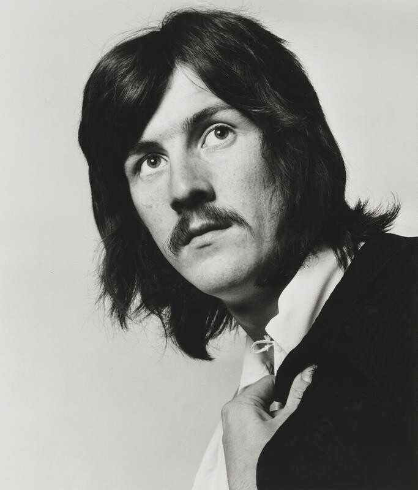
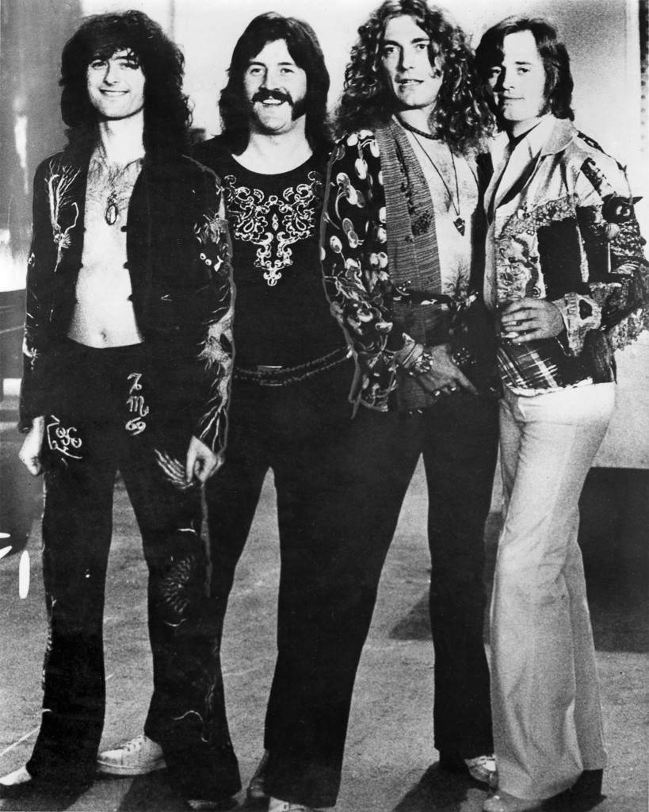

John Bonham is the drummer of Led Zeppelin. Esteemed for his speed, power, incredibly fast single-footed kick drumming, distinctive sound, and feel for the groove, he is regarded as one of the greatest and most influential rock drummers in history.
 His importance to Zeppelin's rise to fame cannot be understated. Even a cursory glance at the rhythm of their songs shows how he acted as an anchor to center the experimental time signatures and scales employed by Page and Plant. For example, the legendary song Kashmir (linked below) has the guitars in 3/4, while the drums are in 4/4, only syncing once every 3 beats. After his death in 1980, rather than replace Bonham, Led Zeppelin chose to disband, out of respect for both his memory and skill.